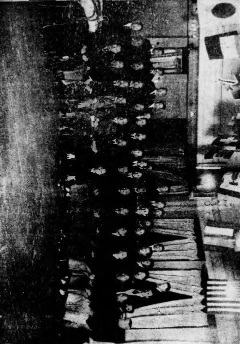
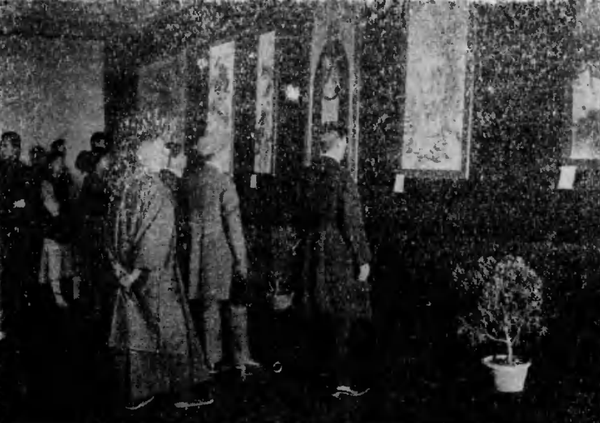
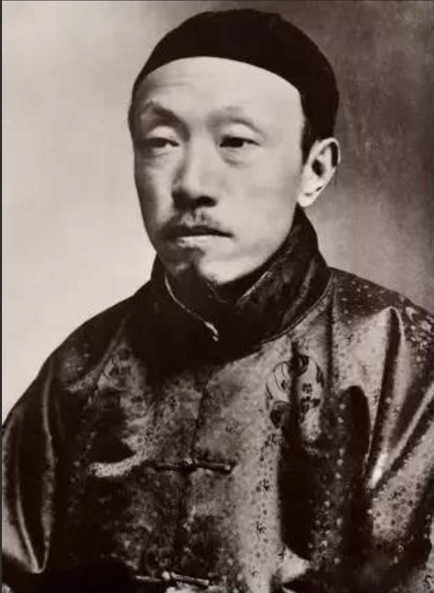
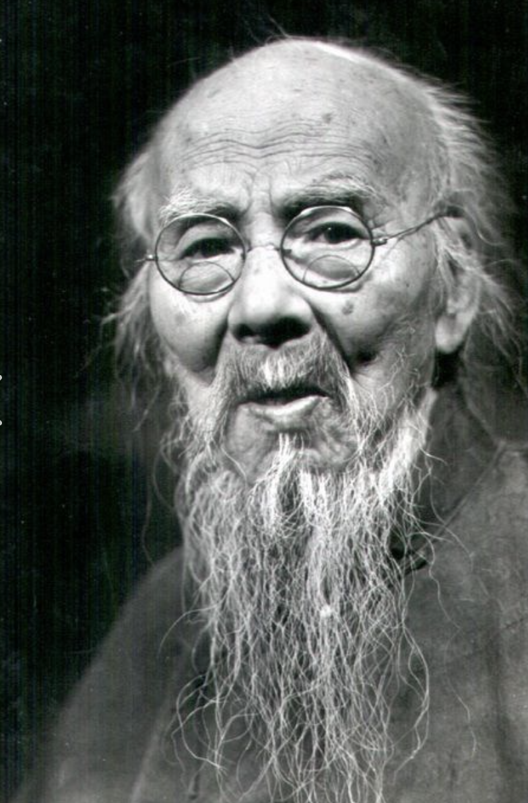
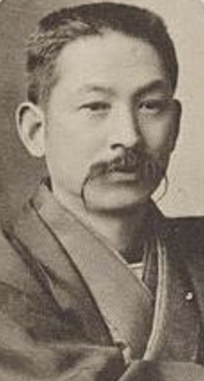

展 中日联合绘画展览会简介
"中日联合绘画展览会"（下称"中日联展"）是二十世纪上半叶东亚最具规模的跨国美术交流平台，为面临西方冲击的中日传统绘画提供了关键对话空间。
该系列展览由日本画家渡边晨亩等人发起，于1920年，由金城、陈师曾等人创立的"中国画学研究会"与日本画家渡边晨亩、荒木十亩等共同策划。从1921年至1931年，双方在北京和东京轮流举办了六次大规模的"中日联合绘画展览会"。
值得注意的是，第五回与第六回分别更名为"中日现代绘画展览会"——唐宋元明名画展览会、"中日古今绘画展览会"——宋元明清名画展览会。展览汇集了当时中日两国画坛的顶尖力量，吸引了数以万计的观众，成为当时极具影响力的文化盛事。
展览影像

第一回联展合影

第一回联展会场-第一室

第二回联展-东京1922

第五回联展-上海1929
中日联展详情
第一回
大正十年（1921.11-12）
北京、天津
中方：金绍城、陈衡恪、吴昌硕、周肇祥、颜世清、王一亭
名誉赞助：徐世昌、黎元洪、陈宝琛
日方：渡边晨亩、荒木十亩、川合玉堂、小室翠云、竹内栖凤
赞助人：德川赖伦、涩泽荣一
第二回
大正十一年（1922.5）
东京（东京府厅工艺馆）
中方：金城、陈师曾、吴昌硕、齐白石、梅兰芳
赴日代表：金域、陈师曾、吴熙曾
日方：渡边晨亩、荒木十亩、川合玉堂、小堀鞆音、小室翠云
资金支持：日华实业协会
第三回
大正十三年（1924.4-5）
北京、上海
中方：金城、周肇祥、吴昌硕、陶鎏泉、萧愻
日方：渡边晨亩、荒木十亩、小室翠云、竹内栖凤、山元春举
日本外务省支持
第四回
大正十五年（1926.6-7）
东京、大阪
中方：金城、金潜庵、周肇祥、惠孝同、钱瘦铁
名誉会长：徐世昌
日方：渡边晨亩、荒木十亩等核心成员
日本外务省支持
第五回
更名："中日现代绘画展览会"又名"唐宋元明名画展览会"
昭和四年（1929.11-12）
上海、大连、奉天
中方借展：溥仪、陈宝琛、罗振玉、张学良
蒋介石援助
日方借展：荒木十亩、川合玉堂、中村不折、德川家达
第六回
更名："中日古今绘画展览会"又名"宋元明清名画展览会"
昭和六年（1931.4-5）
东京（东京上野公园帝室博物馆）
中方借展：徐世昌、叶恭绰、王一亭、陈宝琛、张学良、罗振玉
日方借展：渡边晨亩、喜多冰太、住友宽一、狩野直喜、内藤湖南
主要参展人物
文化先驱 · 推动中日艺术交流

陈半丁
中国

'">陈师曾
中国

金城
中国

'">齐白石
中国

吴昌硕
中国

周肇祥
中国

渡边晨亩
日本

'">荒木十畝
日本
'">
竹内栖凤
日本
小室翠云
日本="fas fa-user text-2xl text-yellow-600">
小室翠云
日本
川合玉堂
日本
大村西崖
日本